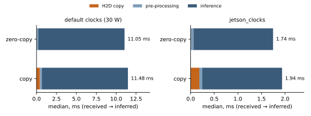
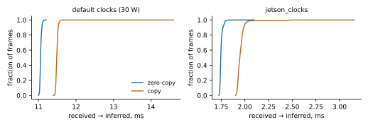
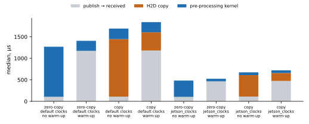

NvBufSurface pool), and copy, the usual path (driver buffer →
memcpy into shared memory → host-to-device copy). On a Jetson AGX Xavier with a
ResNet-18 TensorRT engine, zero-copy saves the host-to-device copy, and nothing else: 0.43 ms per frame at
the default power settings and 0.20 ms with locked clocks (4 % and 10 % of receive-to-inference).
Two other costs are larger: the first GPU operation after the idle gap between 30 fps frames
(0.9–1.1 ms at default clocks; cause not isolated) and the interval from the frame's V4L2
timestamp to its availability, which covers the USB 2.0 transfer (about 32 ms).
Our first reading of the data attributed the wake-up cost to slow GPU reads of the camera buffer;
a control experiment refuted it, and we report both.
jetson_clocks) per 614 KB frame. The pre-processing kernel runs equally fast on the camera
buffer and on cudaMalloc memory (234 vs 237 µs; 60 vs 62 µs).jetson_clocks (GPU and memory clocks locked), for the same engine.Manipulation increasingly relies on cameras mounted on the hand: wrist and palm cameras give close-range views of contact that a head camera cannot. These cameras are small and cheap; many are UVC devices on USB 2.0, delivering YUYV or MJPEG at VGA resolution and 30 fps. The compute that consumes them is often an embedded GPU on the robot (Jetson class), shared with control and other perception. Two questions follow for a system designer: how much of the camera-to-decision latency can the software path still remove, and where does the rest go?
axon is an inter-process transport that hands frames between processes without copying the
payload: producers write into a shared buffer pool and publish only a small descriptor. On
Jetson it can pool NvBufSurface buffers, which a UVC driver can fill directly and which
CUDA can map, so a consumer process gets the frame as a GPU pointer with no copy in user space
(§6 of docs/hardware-verification.md). This paper measures what that buys in a complete
camera → pre-processing → inference loop.
| Item | Configuration |
|---|---|
| Board | NVIDIA Jetson AGX Xavier, L4T R35.6 (JetPack 5.1), CUDA 11.4, TensorRT 8.5.2, cuDNN 8.6 |
| Kernel | PREEMPT_RT 5.10.216-rt108-tegra, CPUs 4–7 isolated (isolcpus=managed_irq,domain,4-7 irqaffinity=0-3 kthread_cpus=0-3) |
| Power | MODE_30W_ALL (CPU 1.19 GHz; GPU devfreq 115–905 MHz); a second set with jetson_clocks (GPU fixed at 905 MHz, EMC fixed) |
| Camera | Logitech Webcam Pro 9000 (UVC, USB 2.0 high speed), 640×480 YUYV, 30 fps, 614 KB per frame |
| Network | ResNet-18 (ONNX model zoo resnet18-v1-7), TensorRT FP16 engine, input 1×3×224×224; trtexec alone: 1.60 ms median |
| Placement | consumer (pre-processing + inference) pinned to isolated CPU 4; producer on CPUs 0–3 |
| Sample | per cell 2 runs × 600 timed frames (after 30 warm-up frames) = 1,200 frames; no frame skipped, no seqlock retry |
Timestamps. Every frame carries six timestamps, all on CLOCK_MONOTONIC_RAW:
the capture time (the V4L2 buffer timestamp, which uvcvideo takes on CLOCK_MONOTONIC when the
frame's first USB packet arrives; converted with the offset between the two clocks read at
dequeue), publish, received by the consumer, frame available on the GPU, pre-processing done
and inference done. Each GPU step is followed by a stream synchronisation, so its time is
measured from the host. The capture-time conversion and the derived publish time
(received − staleness) are accurate to well under 1 µs over these intervals.
Stages. H2D is zero for zero-copy (the frame is already GPU-addressable) and a
pageable cudaMemcpyAsync + sync for copy. The pre-processing kernel converts YUYV to RGB
(BT.601), resizes to 224×224 (nearest) and normalises; inference is enqueueV3 + sync.
Received → inferred is the consumer-side cost a transport choice can change; capture →
inferred adds the camera and the producer.
GPU warm-up. At 30 fps the GPU is idle for most of each frame period. With
E2E_WARM_GPU=1 the consumer runs a tiny kernel and synchronises after a frame is announced
and before it is read, so the first timed GPU step does not also pay for waking the GPU. The
warm-up time therefore appears in publish → received. §5 explains why this matters.
Runs. The two modes alternate within each repetition (zero-copy, copy, zero-copy,
copy) so slow drift affects both. Four cells: {default clocks, jetson_clocks} ×
{warm-up, no warm-up}.
| stage, µs: p50 (p99) | zero-copy | copy | zero-copy, jetson_clocks | copy, jetson_clocks |
|---|---|---|---|---|
| capture → publish | 32,097 (36,164) | 32,204 (36,315) | 32,092 (36,155) | 32,194 (36,273) |
| publish → received (incl. warm-up) | 1,173 (1,294) | 1,181 (1,297) | 464 (573) | 474 (585) |
| H2D copy | 0 (0) | 423 (504) | 0 (0) | 184 (263) |
| pre-processing kernel | 234 (275) | 237 (276) | 60 (109) | 62 (139) |
| inference | 10,820 (10,892) | 10,819 (10,874) | 1,684 (1,730) | 1,689 (1,752) |
| received → inferred | 11,056 (11,134) | 11,486 (11,575) | 1,746 (1,800) | 1,947 (2,115) |
| capture → inferred | 44,361 (48,489) | 44,896 (49,048) | 34,334 (38,440) | 34,646 (38,782) |
memcpy (about 0.1 ms, inside capture → publish).

| stage, µs: p50 | zero-copy | copy | zero-copy, jetson_clocks | copy, jetson_clocks |
|---|---|---|---|---|
| publish → received | 106 | 109 | 104 | 111 |
| H2D copy | 0 | 1,338 | 0 | 499 |
| pre-processing kernel | 1,164 | 245 | 379 | 65 |
| inference | 10,845 | 10,838 | 1,693 | 1,698 |
| received → inferred | 12,010 | 12,427 | 2,077 | 2,271 |
*_nowarm). Whichever GPU step comes first after
the idle gap is about 0.9 ms (default) or 0.3 ms (jetson_clocks) slower than in Table 1.
With the GPU awake, the two pipelines differ in exactly one stage. The H2D copy of a 614 KB
frame from pageable memory takes 423 µs at the default clocks (1.45 GB/s) and 184 µs with locked
clocks (3.3 GB/s); zero-copy removes it. The pre-processing kernel reads the
NvBufSurface as fast as a cudaMalloc buffer (234 vs 237 µs, 60 vs 62 µs), so no
cost appears elsewhere. Inference is identical. The saving is 4 % of received → inferred at the
default clocks and 10 % with locked clocks, where inference is shorter and the copy weighs more.
Without the warm-up (Table 2), the first GPU operation of each frame is slower by about
0.9 ms at the default clocks and 0.32 ms with jetson_clocks: the kernel in the
zero-copy pipeline, the H2D copy in the copy pipeline. About the same amount reappears in publish →
received when the warm-up runs there (1,173 vs 106 µs; 464 vs 104 µs), slightly more because that
stage also runs the warm-up kernel. The GPU is idle for about 30 ms of every 33 ms frame period.
Locking the clocks shortens but does not remove the effect, so clock ramp alone does not explain
it; power gating, the driver submit path and the idle consumer CPU were not separated.
A retracted reading. Our first analysis used only the no-warm-up runs and concluded that
the kernel reads the camera buffer 4.7× slower than device memory (1,164 vs 245 µs). A reviewer
noticed that in the locked-clock copy runs, the 86 frames whose H2D copy was unusually short had
a kernel time of 376 µs on cudaMalloc memory, the same as the zero-copy kernel. That
pointed at a first-operation cost, not at the memory. The warm-up experiment confirmed it. For
measurements of GPU pipelines at camera rates, the first GPU step after an idle gap should be
treated as a separate stage or controlled for.
Between the V4L2 timestamp and the frame being ready to publish, 32–36 ms pass in both
pipelines (p50 32.1 ms, p99 36.2–36.3 ms). uvcvideo stamps a frame when its first USB packet
arrives (hwtimestamps=0), so this interval is the USB 2.0 transfer of the frame plus the
driver's copy out of the USB buffers and the dequeue; the sensor exposure happened earlier and is
not included. The distribution has two modes, near 32 ms and near 36 ms, with a floor at 32.0 ms.
The data cannot tell whether the link bandwidth or the camera's own readout pace sets it.
Compared with this, received → inferred at locked clocks is 1.75–1.95 ms, or about
2.1–2.3 ms when the first-operation cost is included.
The same engine takes 10.8 ms at the default 30 W mode (a single devfreq read at the start of
each run showed the GPU at 115 MHz while idle) and 1.7 ms with jetson_clocks (GPU at 905 MHz,
memory clock locked too, so the GPU clock alone is not isolated), close to the 1.6 ms that
trtexec reports when it keeps the GPU busy. For latency-sensitive perception at camera
rates, the GPU and memory clock policy matters more than the transport.
Publish → received without the warm-up, about 106 µs, is mostly the 100 µs polling interval of
axon's wait_for_update on this build: the JetPack 5 kernel headers lack
futex_waitv, so the wait falls back to polling. On kernels ≥ 5.16 with matching headers
the wait is futex-based.
| Observation | Design implication |
|---|---|
| Timestamp → available ≈ 32 ms of a ~44 ms (default) or ~34 ms (locked) capture → inferred | Latency targets below ~35 ms likely need a different camera: USB 3 or CSI, a higher frame rate, or, if the link bandwidth is the limit (not established here), lower resolution or MJPEG (decode on Jetson's NVJPG). The transport software cannot recover this part. |
| Zero-copy saves 0.2–0.4 ms per frame per camera | Worth it per camera, and it adds up: four hand cameras sharing one GPU would save about 0.8–1.7 ms per cycle in H2D time alone (arithmetic, not measured), plus the CPU memcpy (~0.1 ms each) and the memory traffic. |
| First GPU operation after idle: 0.3–1.1 ms per frame at 30 fps | Lock the clocks for low-rate perception (jetson_clocks measured; a steady background load is untested), or warm the GPU before the frame arrives, the GPU analogue of keeping a CPU out of deep idle (axon's CpuLatencyHold). |
| Timestamp = first USB packet | When fusing with proprioception (joint encoders, tactile), shift the camera time back by the exposure and readout the timestamp does not include. |
| Consumer on an isolated CPU; no frame skipped in 9,600 frames | Pin the perception consumer away from I/O and other inference; see the RT section of docs/hardware-verification.md §7. |
NvBufSurface pool; they were not measured.cmake -S . -B build -DAXON_ENABLE_JETSON=ON -DAXON_WITH_CUDA=ON && cmake --build build -j /usr/src/tensorrt/bin/trtexec --onnx=resnet18-v1-7.onnx --fp16 --saveEngine=resnet18_fp16.engine E2E_WARM_GPU=1 instrumentation/jetson/e2e/run_e2e.sh build resnet18_fp16.engine 600 2 my_run sudo jetson_clocks --store clocks.conf && sudo jetson_clocks # locked-clock cells E2E_WARM_GPU=1 instrumentation/jetson/e2e/run_e2e.sh build resnet18_fp16.engine 600 2 my_run_jc sudo jetson_clocks --restore clocks.conf python3 docs/whitepapers/jetson-camera-e2e/make_figures.py # figures + numbers.json
Raw data: instrumentation/jetson/e2e/results/{default,jetson_clocks}_{warm,nowarm}/,
one CSV row per frame (seq,t_cap,t_pub,t_view,t_gpu,t_pre,t_inf,top1,seqlock_retries),
consumer summaries, producer logs and env.txt (kernel, power mode, isolated CPUs, camera
format, GPU clocks, warm-up setting; the *_nowarm runs predate the clock record). Every
number in this paper is computed by make_figures.py into numbers.json.